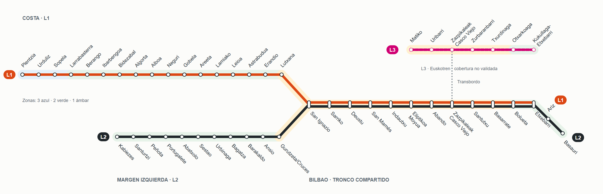

AndroidMetro · Revisión del mapa
Capturas de navegador, 10 de octubre de 2026. No son capturas de una integración Android.
Abrir el prototipo · Resultados y límites · Documentación

Mapa completo exportado desde el SVG. Pulsa cualquier captura para verla a su tamaño original.